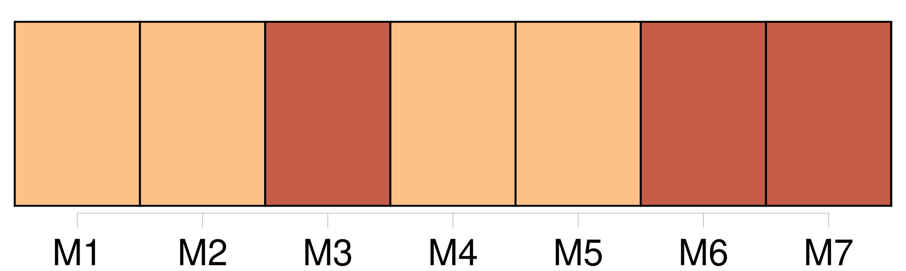

Longueur nb maillons : 109 mentions |
  |
[J’] étais plongé dans une de ces rêveries profondes qui saisissent tout le monde, même un homme frivole, au sein des fêtes les plus tumultueuses. [1 phrases] Assis dans l’ embrasure d’ une fenêtre, et caché sous les plis onduleux d’ un rideau de moire, [je] pouvais contempler à [mon] aise le jardin de l’ hôtel où [je] passais la soirée. [2 phrases] Puis, en me retournant de l’ autre côté, [je] pouvais admirer la danse des vivants!! [7 phrases] Ainsi à [ma] droite la sombre et silencieuse image de la mort ; à [ma] gauche, les décentes bacchanales de la vie : ici, la nature froide, morne, en deuil ; là, les hommes en joie. [Moi] , sur la frontière de ces deux tableaux si disparates, qui, mille fois répétés de diverses manières, rendent Paris la ville la plus amusante du monde et la plus philosophique, [je] faisais une macédoine morale, moitié plaisante, moitié funèbre. Du pied gauche [je] marquais la mesure, et [je] croyais avoir l’ autre dans un cercueil.
[Ma] jambe était en effet glacée par un de ces vents coulis qui vous gèlent une moitié du corps tandis que l’ autre éprouve la chaleur moite des salons, accident assez fréquent au bal. [10 phrases] [J’] avançai la tête et [reconnus] les deux interlocuteurs pour appartenir à cette gent curieuse qui, à Paris, s’ occupe exclusivement des Pourquoi?? [101 phrases] Ces derniers mots étaient dits, autour de [moi] , par des inconnus qui s’ en allèrent au moment où [je] résumais, dans une dernière pensée, mes réflexions mélangées de noir et de blanc, de vie et de mort. [Ma] folle imagination autant que [mes] yeux contemplait tour à tour et la fête, arrivée à son plus haut degré de splendeur, et le sombre tableau des jardins. [Je] ne sais combien de temps [je] méditai sur ces deux côtés de la médaille humaine ; mais soudain le rire étouffé d’ une jeune femme [me] réveilla. [Je] restai stupéfait à l’ aspect de l’ image qui s’ offrit à [mes] regards. Par un des plus rares caprices de la nature, la pensée en demi-deuil qui se roulait dans [ma] cervelle en était sortie, elle se trouvait devant [moi] , personnifiée, vivante, elle avait jailli comme Minerve de la tête de Jupiter, grande et forte, elle avait tout à la fois cent ans et vingt-deux ans, elle était vivante et morte. [5 phrases]
Ils étaient là, devant [moi] , tous deux, ensemble, unis et si serrés, que l’ étranger froissait et la robe de gaze, et les guirlandes de fleurs, et les cheveux légèrement crêpés, et la ceinture flottante. [J’] avais amené cette jeune femme au bal de madame de Lanty. Comme elle venait pour la première fois dans cette maison, [je] lui pardonnai son rire étouffé ; mais [je] lui fis vivement [je] ne sais quel signe impérieux qui la rendit tout interdite et lui donna du respect pour son voisin. Elle s’ assit près de [moi] [5 phrases]
La jeune femme [me] pressa vivement la main, comme si elle eût cherché à se garantir d’ un précipice, et frissonna quand cet homme, qu’ elle regardait, tourna sur elle deux yeux sans chaleur, deux yeux glauques qui ne pouvaient se comparer qu’ à de la nacre ternie.
— J’ ai peur, [me] dit -elle en se penchant à [mon] oreille. — Vous pouvez parler, répondis [-je] [1 phrases]
— [Vous] le connaissez donc? [27 phrases]
c’ était bien la mort et la vie, [ma] pensée, une arabesque imaginaire, une chimère hideuse à moitié, divinement femelle par le corsage.
— Il y a pourtant de ces mariages -là qui s’ accomplissent assez souvent dans le monde, me dis [-je] — Il sent le cimetière, s’ écria la jeune femme épouvantée qui [me] pressa comme pour s’ assurer de [ma] protection, et dont les mouvements tumultueux [me] dirent qu’ elle avait grand’peur. — C’ est une horrible vision, reprit -elle, [je] ne saurais rester là plus long-temps. Si [je] le regarde encore, [je] croirai que la mort elle -même est venue [me] chercher. [6 phrases] Elle prit [mon] bras et [m’] entraîna vers un boudoir. [2 phrases]
[Ma] compagne se jeta sur un divan, palpitant d’ effroi, sans savoir où elle était.
— Madame, vous êtes folle, lui dis [-je] — Mais, reprit -elle après un moment de silence pendant lequel [je] l’ admirai, est -ce ma faute?? [1 phrases] — Allons, répondis [-je] , vous imitez les sots. [13 phrases]
[me] demanda-t -elle après avoir examiné, non sans un doux sourire de contentement, la grâce exquise des contours, la pose, la couleur, les cheveux, tout enfin. [2 phrases] comme [je] ressentis alors les atteintes de cette jalousie à laquelle un poète avait essayé vainement de [me] faire croire!! [1 phrases] — C’ est un portrait, lui répondis [-je] [3 phrases]
[J’] hésitai. [1 phrases] — [Je] crois, lui dis [-je] , que cet Adonis représente un …… [2 phrases] [J’] eus la douleur de la voir abîmée dans la contemplation de cette figure. Elle s’ assit en silence, [je] me mis auprès d’ elle, et lui pris la main sans qu’ elle s’ en aperçût!! [19 phrases] [me] demanda [ma] jeune partenaire. [4 phrases]
répondis [-je] , vous, madame, qui êtes exaltée et qui, comprenant si bien les émotions les plus imperceptibles, savez cultiver dans un cœur d’ homme le plus délicat des sentiments, sans le flétrir, sans le briser dès le premier jour, vous qui avez pitié des peines du cœur, et qui à l’ esprit d’ une Parisienne joignez une âme passionnée digne de l’ Italie ou de l’ Espagne …
Elle vit bien que [mon] langage était empreint d’ une ironie amère ; et, alors, sans avoir l’ air d’ y prendre garde, elle [m’] interrompit pour dire : [vous] me faites à [votre] goût. [1 phrases]
[Vous] voulez que je ne sois pas moi. [1 phrases] [je] ne veux rien, m’ écriai [-je] épouvanté de son attitude sévère. [5 phrases]
bien, [j’] irai demain soir chez vous vers neuf heures, et [je] vous révélerai ce mystère. [1 phrases]
— Vous ne [m’] avez pas encore donné le droit de vous obéir quand vous dites : [Je] veux. [1 phrases]
Demain, je ne [vous] écouterai peut-être pas … Elle sourit, et nous nous séparâmes ; elle toujours aussi fière, aussi rude, et [moi] toujours aussi ridicule en ce moment que toujours.
Elle eut l’ audace de valser avec un jeune aide-de-camp, et [je] restai tour à tour fâché, boudeur, admirant, aimant, jaloux.
— À demain, [me] dit -elle vers deux heures du matin, quand elle sortit du bal. — [Je] n’ irai pas, pensais [-je] , et [je] t’ abandonne. [1 phrases]
que [mon] imagination. Le lendemain, nous étions devant un bon feu, dans un petit salon élégant, assis tous deux ; elle sur une causeuse ; [moi] , sur des coussins, presque à ses pieds, et [mon] œil sous le sien. [5 phrases] — Mais [je] n’ ose commencer. [1 phrases]
Si [je] m’ enthousiasme, vous [me] ferez taire. [1 phrases]
— [J’] obéis. « Ernest-Jean Sarrasine était le seul fils d’ un procureur de la Franche-Comté, repris [-je] après une pause. [40 phrases] Sophie Arnould a dit [je] ne sais quel bon mot à ce sujet. Elle s’ étonna, [je] crois, que sa camarade eût pu l’ emporter sur des statues. [29 phrases] Il n’ applaudit pas, il ne dit rien, il éprouvait un mouvement de folie, espèce de frénésie qui ne nous agite qu’ à cet âge où le désir a [je] ne sais quoi de terrible et d’ infernal. [36 phrases]
— Mais, [me] dit madame de Rochefide en [m’] interrompant, je ne vois encore ni Marianina ni son petit vieillard.
— Vous ne voyez que lui, m’ écriai [-je] impatienté comme un auteur auquel on fait manquer l’ effet d’ un coup de théâtre. « Depuis quelques jours, repris [-je] après une pause, Sarrasine était si fidèlement venu s’ installer dans sa loge, et ses regards exprimaient tant d’ amour, que sa passion pour la voix de Zambinella aurait été la nouvelle de tout Paris, si cette aventure s’ y fût passée ; mais en Italie, madame, au spectacle, chacun y assiste pour son compte, avec ses passions, avec un intérêt de cœur qui exclut l’ espionnage des lorgnettes. [45 phrases] comme son cœur battit quand il aperçut un pied mignon, chaussé de ces mules qui, permettez -moi de le dire, madame, donnaient jadis au pied des femmes une expression si coquette, si voluptueuse, que [je] ne sais pas comment les hommes y pouvaient résister. [4 phrases] — La Zambinella, repris [-je] en souriant, s’ était effrontément croisé les jambes, et agitait en badinant celle qui se trouvait dessus, attitude de duchesse, qui allait bien à son genre de beauté capricieuse et pleine d’ une certaine mollesse engageante. [121 phrases]
En ce moment son regard eut [je] ne sais quelle expression d’ horreur si puissante, si vive, que Sarrasine en tressaillit. [160 phrases]
— Mais, [me] dit madame de Rochefide, quel rapport existe-t -il entre cette histoire et le petit vieillard que nous avons vu chez les Lanty? [7 phrases]
dit -elle en [me] faisant un geste impérieux. [3 phrases]
lui dis [-je] [2 phrases]
Elle vint [me] regarder, et [me] dit d’ une voix altérée : [10 phrases]
lui dis [-je] , vous savez punir. [1 phrases] — Oui, répondis [-je] avec une sorte de courage. En achevant cette histoire, assez connue en Italie, [je] puis vous donner une haute idée des progrès faits par la civilisation actuelle. [6 phrases]
Et [la marquise] resta pensive. |

|
La ressource peut être téléchargée sur la page Ortolang
Si vous avez des questions ou vous voyez des erreurs, merci d'envoyer un mail à silvia.federzoni89@gmail.com
Site développé par S. Federzoni (contact)